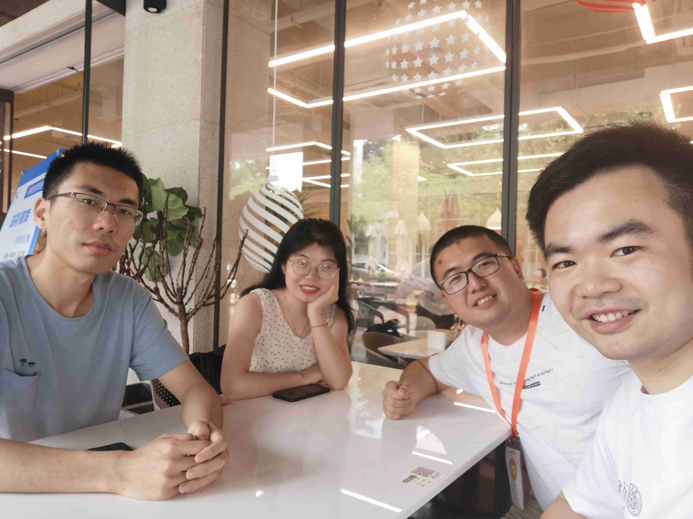
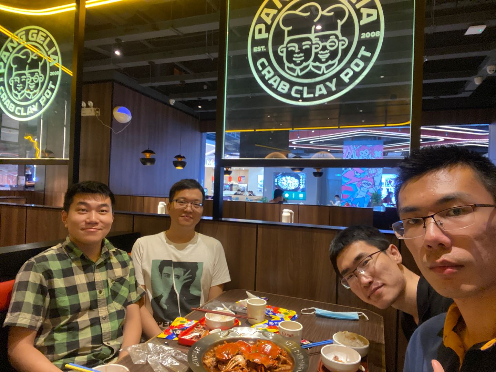
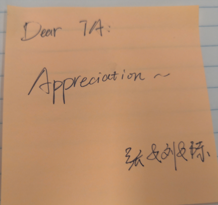

Going out
2020/5/22
It is hard to go out of the campus in recent days. I have to find some obscure way along the Dasha River. Still, the field workers stop me when I come back. They warn that I can't do such thing any more.
Reunion
2020/5/26
Reunion with partial members of 2018 summer volunteer teaching students since Shaoping is going to leave the campus tomorrow. 
Eating with lab members
2020/6/25

Climbing
2020/7/15
This is the second time I went to TangLang Mountain with my roommate, Pengyang Zhao. Usually I went climbing once a time every weak.
Poem
2020/7/16
When I went to iPark this morning, a poem flowed to my mind:
曾幻年来事非空 笔底飞鸿已无踪 春风杨柳花开日 粉面桃花人不同
Eating with lab members
2020/7/22

Split of Life and Study
2020/8/3
This night I said to my roommate PengYang Zhao, "In most time I studied in lab and take rest in our dormitory." "No, you should say, 'I take rest in the upper and study in the lower.'" Peng replied.
Some background information: our bed is on the upper part of the furniture in the dormitory.
Delivery
2020/8/4
This noon when I was in the elevator of C2 Building, iPark. I heard, " 美女你到十四楼吗，能帮忙把这个（外卖）放前台吗，谢谢，我打电话给他。"
Thanks
2020/11/11

Missing
2020/11/16
信息大楼保安的问好， 荷一食堂的支付成功， 宿舍楼前门禁的谢谢， 都不如听到你 让我如沐春风
男生节的横幅， 电脑里的程序， 各式的菜肴， 都不如看见你 让我心驰神往
学外语的新奇 做科研的奥妙 读诗歌的典雅 都不如想到你 让我全神贯注
Teaching others
2020/11/17
Teaching others will not always improve yourself. I am again touched by such view when preparing a tutorial on the principle of neural network. This slide is intended for a meetup of a regional data science group. I think the problem with routine lies at the stale impression of knowledge. When I am quite familiar with something, I will get tired.
a poem in dream
2020/11/18
浚江东上阻 河化入清流
欲留人之意 不复旧时书
a poem after wake in the morning
2020/11/19
春时去已尽 秋日水流长
还将旧时意 怜取眼前人
Dreaming the wars of the Roses
Yesterday I had a dream. In the dream, I went into a cultural shop and bought a souvenir coin memorizing "Wars of the Roses". The coin itself is quite expensive.
Crying for parents
2020/12/9
In the "Classic of Poetry" (诗经), there is a poem called （日月）, in which a lady is crying for her parents. Some reviewers thought it was natural for human to cry for parents when they were in trouble. I remember a similar thing happened in USA when George Floyd was stroked by a police. He also cried for her mother in the video clip.